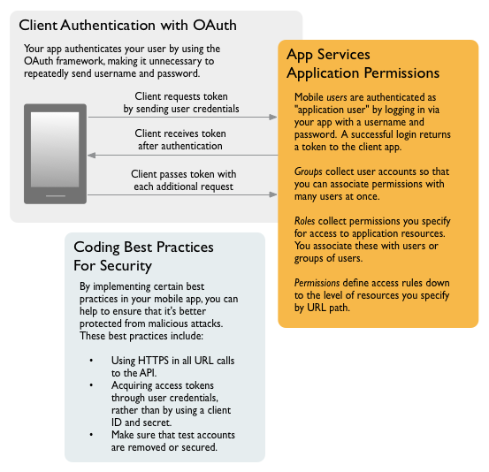

Security & Token Authentication¶
Any app you put into production should feature security that protects your app, your users, and your app’s data. Implementing security means taking steps in your mobile app’s code and in your API Services BaaS application.
Important: When you register for the API Services BaaS, you get a sandbox application that you can use to try things out. This application is not for use in production. By default, the sandbox application is not protected by any security measures whatsoever. Use the sandbox only for experimentation, and only with data that isn’t in any way sensitive.
When securing your app, follow these high-level steps:
- Define the rules that will govern access by your app’s users to your app’s data and features. You do this with the admin portal by creating permission rules, then associating those rules with your users. For more information, see [Using Permissions](managing-access-defining-permission-rules.html).
- Write code through which your app’s users can verify who they are to your application. You do this by writing code that uses their username and password as credentials to initially authenticate with your application, then uses a token thereafter. (This authentication style supports the OAuth 2.0 model.) For more information, see [Authenticating users & app clients](autheticating-users-and-application-clients.html).
- Be sure to use coding best practices that help ensure that your app is protected from malicious attacks. For more information, see [Security best practices](security-best-practices.html).
The following illustration describes these high-level areas.
